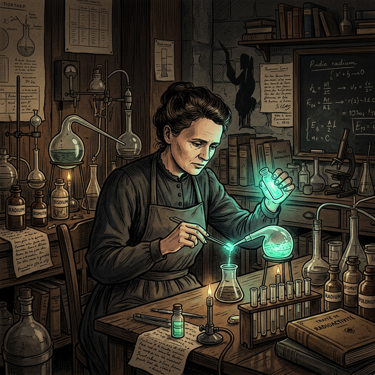

La ciencia ya no está aislada
Durante mucho tiempo, los filósofos trataron a la ciencia como una actividad puramente intelectual, como un monje solitario buscando la Verdad en su torre de marfil. Pero en el mundo contemporáneo, esa imagen es un mito. La ciencia requiere enormes presupuestos estatales y corporativos, y sus resultados alteran fundamentalmente nuestra manera de vivir.
El enfoque de los estudios CTS (Ciencia, Tecnología y Sociedad) surge para analizar justamente esta intersección. No podemos entender el desarrollo de las teorías separándolas del avance de los instrumentos técnicos o de los intereses económicos, políticos y bélicos que las financian.
Ciencia, Tecnología y la Búsqueda del Saber
Es fundamental establecer fronteras (aunque difusas) entre los tipos de investigación que las instituciones científicas llevan adelante en la actualidad:
El Ecosistema Cognitivo-Material
Interactúa con cada nodo para comprender sus diferencias
Haz click en los círculos superiores
Descubre cómo se entrelazan la búsqueda del saber y la necesidad de transformar el mundo a nuestro alrededor. ¿Qué viene primero: el descubrimiento o el invento?
Hoy en día, las fronteras entre estas disciplinas se han vuelto casi invisibles. La tecnociencia es la síntesis de todas: una mega-estructura en donde investigar y desarrollar artefactos se realizan al mismo tiempo y persiguiendo el mismo fin práctico y comercial o geopolítico.
El papel de los Instrumentos
Recordemos, desde las primeras clases, cómo el humilde telescopio de Galileo destruyó el mundo aristotélico. La filosofía de la tecnología enfatiza que **nuestros instrumentos no son ventanas transparentes al mundo**: son aparatos teóricamente diseñados que determinan qué fragmentos de la realidad podemos percibir.
El microscopio electrónico y los grandes aceleradores de hadrones (como el LHC) no "descubren" el mundo natural sin más; lo provocan, lo construyen e intervienen en él. La tecnología es, frecuentemente, empíricamente anterior a la teoría científica formal.
El filósofo francés Bachelard afirmaba que en la ciencia moderna, un instrumento científico es "materia atravesada por una teoría". No podemos "ver" un electrón sin poseer previamente toda la teoría electromagnética que nos permite diseñar el aparato capaz de registrarlo. El fenómeno natural no se observa, se *fabrica* técnicamente.
El fenómeno de la Serendipia
Pese a la imagen de que la ciencia procede bajo un método hiperexacto de manera fría y predecible, los estudios CTS rescatan constantemente el rol de la serendipia: el descubrimiento valioso e inesperado que ocurre mientras el investigador, en realidad, estaba buscando otra cosa completamente distinta.
Penumbrina de Penicillium
Quizás el mejor ejemplo sea Alexander Fleming. Sus placas de Petri (tecnología de laboratorio) que intentaban cultivar estafilococos, se contaminaron por accidente debido a una ventana abierta. El hongo anómalo mató a la bacteria, originando la Penicilina. La tecnología médica contemporánea no nació de una deducción formal implacable, sino de un evento fortuito y fortificadamente observado.
De la bomba de fisión a la Fusión en las Estrellas
Para analizar el clímax de la relación entre Ciencia, Tecnología y Sociedad, tenemos que trasladarnos al momento donde la humanidad demostró tener el poder técnico de aniquilar el planeta: la fisión nuclear y el histórico Proyecto Manhattan (1942-1945). Este fue el megaprograma de investigación liderado por EE.UU. en pleno desierto de Los Álamos (Nuevo México), dirigido científicamente por el físico J. Robert Oppenheimer y militarmente por el general Leslie Groves.
En las décadas iniciales del siglo XX, teóricos de ciencia básica como Albert Einstein, Niels Bohr y Werner Heisenberg formulaban en sus pizarrones abstracciones matemáticas sobre mecánica cuántica y la ecuación E=mc². Lo que parecía ciencia básica y metafísica del universo, se materializó tecnológicamente sobre Hiroshima y Nagasaki con las bombas atómicas de fines de la Segunda Guerra Mundial.
Sin embargo, aquí reside la complejidad del enfoque CTS: ese mismo conocimiento sobre la fisión atómica financiado por intereses bélicos sentó las bases para usos pacíficos transformadores. El entendimiento profundo de cómo se libera energía al dividir núcleos inestables (como el Uranio-235) impulsó en las décadas de 1950 y 1960 la creación de reactores nucleares civiles. Hoy, casi el 10% de la red eléctrica global depende de la energía nuclear, que tiene la ventaja ecológica de no emitir gases de efecto invernadero perjudiciales para el calentamiento global.
El futuro: La Fusión Nuclear
Mientras la fisión (romper núcleos) genera residuos radiactivos, la ciencia actual (proyectos como ITER en el siglo XXI) persigue imitar la dinámica solar: la fusión nuclear (unir núcleos ligeros como el hidrógeno). Si esta tecnología se domina, promete energía limpia, segura y prácticamente inagotable.
El Dilema Ético Permanente
¿Es el científico moralmente responsable del uso destructivo que la tecnología o los militares hagan de su descubrimiento analítico "neutral"? La ambivalencia de la técnica es el gran debate de los enfoques CTS.
"Hablamos en esta ocasión no como miembros de una u otra nación, continente o credo, sino como seres humanos, miembros de la especie humana, cuya continuidad está en duda. [...] Como científicos, debemos advertir urgentemente sobre las posibles aplicaciones de nuestros descubrimientos."
Radium, Marie Curie y la Lucha contra el Cáncer
La dualidad de los descubrimientos científicos brilla con claridad en la historia de la radiactividad y el trabajo de la física y química Marie Skłodowska-Curie. A finales del siglo XIX (1898), junto a su esposo Pierre Curie, aislaron el Polonio y el Radio, desafiando la concepción clásica de que los átomos eran esferas indivisibles. Por este trabajo pionero de ciencia básica pura, Marie Curie fue galardonada con dos Premios Nobel (1903 en Física y 1911 en Química).

Marie Skłodowska-Curie (1867-1934)
Nacida en Varsovia bajo la ocupación del Imperio Ruso, Marie tuvo que estudiar en la universidad clandestina "flotante" antes de poder viajar a París. Fue la primera mujer en ganar un Premio Nobel, y la única persona en ganarlo en dos disciplinas científicas distintas (Física y Química). Su vida es un testamento de tenacidad frente al machismo de la época y de dedicación absoluta al conocimiento empírico. Trágicamente, falleció de anemia aplásica, contraída por las décadas de exposición constante a los materiales radiactivos que ella misma aisló y descubrió sin conocer sus efectos nocivos a largo plazo.
Poco tiempo después de su aislamiento, surgió la tecno-ciencia: los médicos notaron que exponer tejido enfermo, en particular tumores, a la radiación destruía las células de rápida reproducción. Marie Curie misma abogó fervientemente por la aplicación médica de su descubrimiento. Durante la Primera Guerra Mundial (1914-1918), diseñó "ambulancias radiológicas" (los Petites Curies) para que la tecnología naciente de rayos X permitiera a los cirujanos militares salvar incontables vidas de soldados detectando balas en sus cuerpos.
El sendero iniciado por la ciencia radiológica de Curie ha evolucionado
hacia terapias altamente complejas en el siglo XXI. Una de las fronteras tecnológicas en la
medicina es la Terapia por Captura Neutrónica en Boro (BNCT por sus siglas en
inglés).
¿En qué consiste? A diferencia de la radioterapia clásica que
también puede dañar tejido sano colindante, en la técnica BNCT se le inyecta al paciente un
compuesto que contiene el elemento boro, el cual es absorbido casi exclusivamente
por el tejido tumoral. Luego, se irradia al paciente con un haz de neutrones de baja energía
proveniente de un reactor nuclear. Cuando los neutrones chocan con el boro dentro de las
células cancerígenas, generan una mini-fisión nuclear altamente localizada que destruye la
célula maligna desde adentro, preservando casi intacto el tejido biológico sano que la
rodea.
Preguntas de debate bioético y CTS
- Frente al fenómeno de la inteligencia artificial contemporánea: ¿Es equiparable el nacimiento de ChatGPT a la fisión nuclear en términos de la responsabilidad del programador sobre el desempleo masivo u otros riesgos sociales?
- Considerando la serendipia: si los descubrimientos más importantes son accidentales, ¿tiene sentido que el Estado invierta millones dirigiendo investigaciones a objetivos muy específicos y cerrados en vez de financiar a científicos para que "jueguen libremente"?
- Afirmamos que la ciencia y la tecnología están entrelazadas con poderes comerciales corporativos y armamentísticos. Entonces, ¿es la ciencia "objetiva" o sus hallazgos son un producto de los patrocinadores que invirtieron capital?